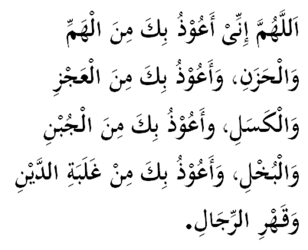

|

Terjemahan "Ya Allah, aku berlindung kepadaMu dari rundungan sedih dan duka. Aku berlindung kepadaMu dari sifat lemah dan malas. Aku berlindung kepadaMu dari sifat bacul dan kikir. Aku berlindung kepadaMu dari beban hutang dan penindasan orang." Fadhilat Wirid Abu Hurairah (RA) meriwayatkan bahawa Rasulullah (SAW) masuk ke dalam masjid. Tiba-tiba terdapat seorang sahabat bernama Abu Amamah di dalam keadaan ketar, maka baginda bertanya: "Apakah sebab aku lihat kamu berada di masjid yang bukan masa sembahyang?" Jawab Abu Amamah: "Beberapa urusan hutang telah menyebabkan aku resah gelisah wahai Rasulullah." Maka jawab baginda : "Tidakkah sepatutnya aku beri satu bacaan yang apabila engkau baca,akan dihilangkan oleh Allah (SWT) penyakit kebingungan itu dan akan terbayar hutang-hutangmu?" Jawabnya: "Ya!" Lalu baginda bersabda: "Apabila pagi dan petang, hendaklah membaca (bacaaan di atas)." Kemudian Abu Amamah berbuat seperti yang diarahkan oleh Rasulullah (SAW), maka Allah (SWT) telah menghilangkan penyakit resahnya, dan segala hutangnya dapat diselesaikan. (Dikeluarkan oleh Abu Daud) |